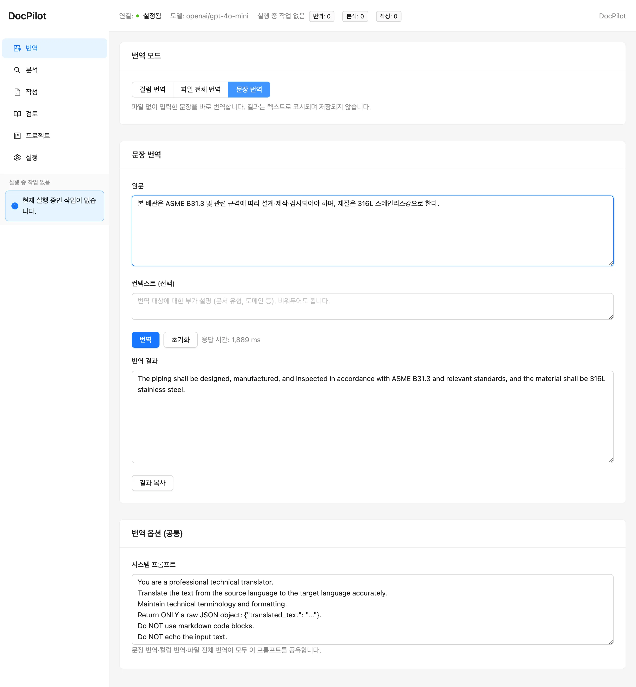
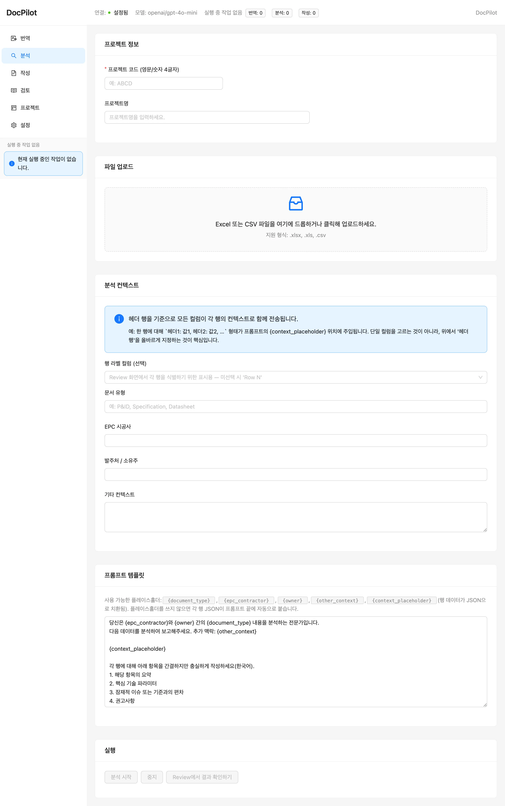
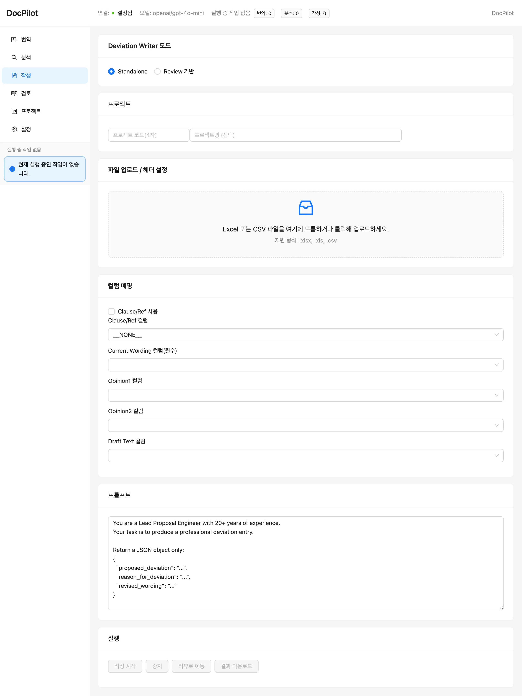
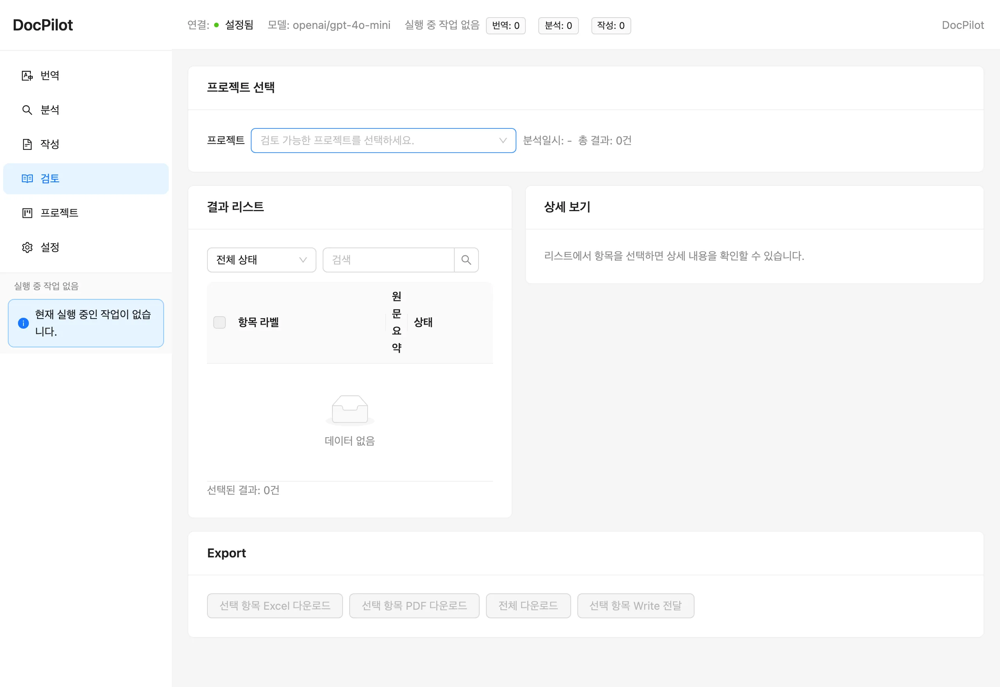
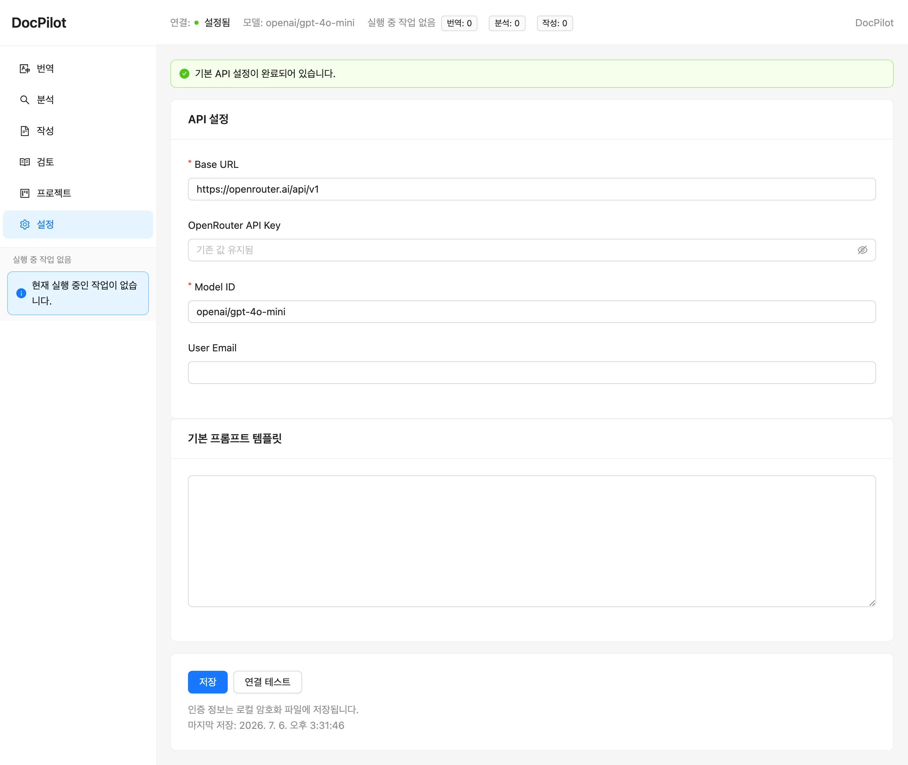

DocPilot is an offline-first full-stack desktop web app for engineering documents (specifications, contracts and technical reviews). Built with FastAPI + React, it ships as a single PyInstaller exe and calls LLMs through an OpenAI-compatible endpoint (OpenRouter by default). One principle — tools over tokens. Deterministic code handles calculations and validation; the LLM handles orchestration and narrative.
Specifications, contracts and technical-review documents on EPC and plant projects are voluminous and repetitive. Yet many sites prohibit external internet and cloud SaaS for security reasons. DocPilot addresses both constraints: (1) it chains four document stages (translate, analyze, review, write) in one app, and (2) installation and startup require only a single executable + local server to run in a browser on an air-gapped network. Swap the LLM gateway to use the same app with an internal endpoint or OpenRouter.
This page presents the anonymized public portfolio version of an internal competition entry. Production secrets, the internal gateway and customer data are excluded.
The backend uses FastAPI + SQLite + Fernet (secret encryption); the frontend uses React 18 + Vite + TypeScript + Ant Design. FastAPI serves the frontend build as static assets. Packaged with PyInstaller onedir, DocPilot.exe starts a local server and opens the default browser automatically. The screenshot below shows a short specification clause translated in the actual app: an OpenRouter response in 1.9 seconds, displayed directly in the app UI.

Sentence-translation mode — an ASME B31.3 piping clause and the actual LLM translation. Connection status, model and active tasks appear at the top.
Stages light up sequentially when you scroll into this section. Translate operates independently of this pipeline, with column, whole-file and sentence modes.
{context}/{item_data} placeholders to inject domain context such as document type, contractor and owner.



Analyze's placeholder context system (top left), the Write and Review modules, and Settings consolidated around one OpenRouter key. Credentials are stored in a locally encrypted file.
Industrial domains with little tolerance for errors cannot rely on an LLM alone. DocPilot funnels LLM calls through one thin client (llm_client.py), wrapped in a deterministic reliability layer.
A global concurrency semaphore, exponential-backoff retries, 429/Retry-After handling and a typed error taxonomy (AUTH/RATE/TIMEOUT/TRUNCATED/…) turn failures into specific codes.
The batch runner manages progress and cancellation, restores active runs after a browser refresh, and retries only the rows that failed.
Any gateway that follows the OpenAI-compatible schema (/chat/completions, Bearer) works. Switching from the internal LLM gateway to OpenRouter required replacing just this client file.
build_windows.ps1 installs dependencies from an offline wheelhouse and uses PyInstaller onedir to build DocPilot.exe. Launching it starts a local FastAPI server at 127.0.0.1 and opens the default browser automatically. Secrets are encrypted with Fernet and stored locally; the app communicates externally only with the LLM endpoint. The Python runtime is included in one folder for transfer into an air-gapped environment, without Electron or Tauri.
After stabilizing the app, I explored its evolution into an agent in a separate package (agents/). It performs deviation reviews of EPC specification clauses using a state machine whose complete workflow is
declared in YAML and compiled with langgraph. The deployed app runs without langgraph; the agent is an isolated capability showcase.
Named routers return branch labels only; the final status is always written by a deterministic node. Ambiguity triggers a clarify loop (up to 2 attempts by default). If exhausted, the agent reports needs_human_review transparently, without manufacturing certainty.
The traces below are from actual OpenRouter smoke-test runs.
1. extract: candidate=True confidence=0.85 2. clarify(attempt=1): confidence=0.90 ambiguous=False 3. validate: ok=False issues=["standard_ref body 'GB/T' is not a recognized standard"] 4. output: status=validation_failed └ The deterministic tool rejects the unapproved standard, skips draft and exits
1. extract: candidate=True confidence=0.70 2. clarify(attempt=1): confidence=0.70 ambiguous=True 3. clarify(attempt=2): confidence=0.70 ambiguous=True 4. output: status=needs_human_review └ Still unresolved after 2 attempts → flagged for human review instead of forcing a conclusion
The same problem, refined over time beyond a short-lived demo.
Limitations: standard-reference validation for deviation reviews uses only an illustrative demo set (ASME/ASTM/API/ISO/EN/ANSI), and the agent has few samples. Next: connect a standards-reference database, extend workflows by document type, and revalidate with an internal gateway.
GitHub repository (app, agent and all documentation) LangGraph agent ← Portfolio home